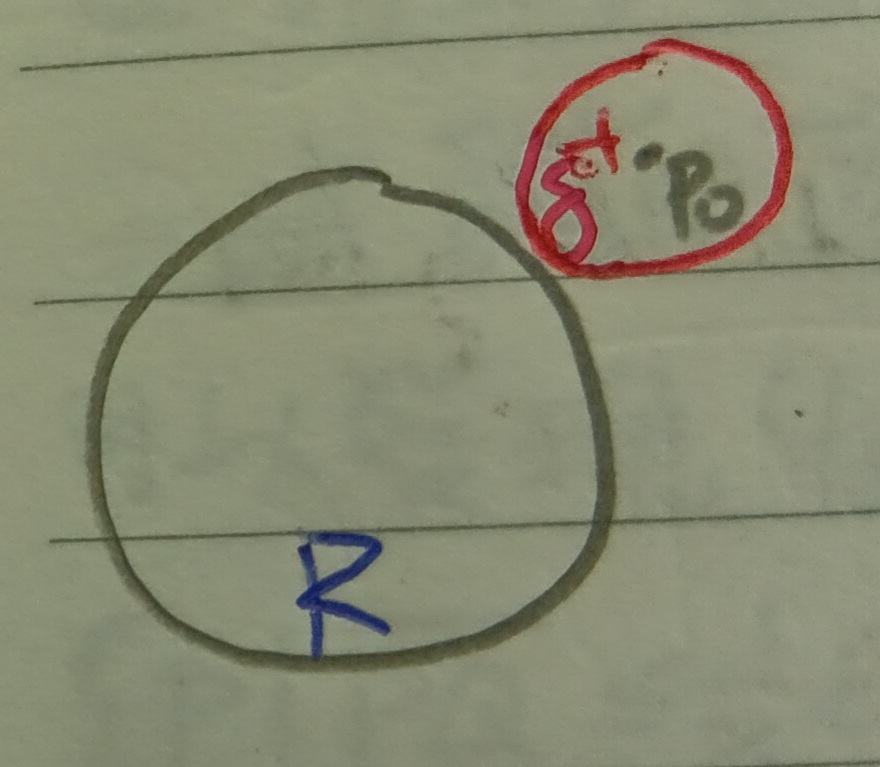

這份筆記是關於簡單曲面的定義與性質。
基本曲面
定義 1：基本曲面 (Elementary Surface)
我們說\(\mathbb{R}^3\)中的\(\sigma\)是一個點集\(\sigma=(x,y,z)\)是一個基本曲面，若其中\((x,y,z)\)可被表為\(x=f(u,v)\), \(y=g(u,v)\), \(z=h(u,v)\)，且滿足以下四個條件：
1.
\((u,v)\)的域(Domain)是一開集\(U\)。
2. \(f,g,h\)在\(U\)中連續，且一階導數也連續。
3.
三個雅可比行列式不全為零，即 \[
w=\sqrt{\left|
\begin{array}{cc}
f_u & f_v\\
g_u & g_v
\end{array}
\right|^2+\left|
\begin{array}{cc}
g_u & g_v\\
h_u & h_v
\end{array}
\right|^2+\left|
\begin{array}{cc}
h_u & h_v\\
f_u & f_v
\end{array}
\right|^2}>0
\]
4. \(U\)打到\(\sigma\)的映射是一對一的，且\(\sigma\)打回\(U\)的映射是連續的。
註記 1-1
在定義1的條件3.中，令 \[ A=\left| \begin{array}{cc} f_u & f_v\\ g_u & g_v \end{array} \right|, B=\left| \begin{array}{cc} g_u & g_v\\ h_u & h_v \end{array} \right|, C=\left| \begin{array}{cc} h_u & h_v\\ f_u & f_v \end{array} \right| \] 則 \[ (A,B,C)=(f_u,g_u,h_u)\times(f_v,g_v,h_v) \] 條件3.要求\((A,B,C)\)不是零向量就是希望\((f_u,g_u,h_u)\)和\((f_v,g_v,h_v)\)線性獨立。WLOG，令\(C\neq 0\) i.e. \(f_ug_v-f_vg_u\neq 0\)，即\(\frac{\partial(x,y)}{\partial(u,v)}\neq 0\)。則由反函數定理(這裡的定理5)知存在一個鄰域使得在這之中\((u,v)\)可以表為 \[ \left\{ \begin{aligned} u&=\phi(x,y)\\ v&=\psi(x,y) \end{aligned} \right. \] 又\(z=h(u,v)\)，故\(z\)可表為 \[ z=h(\phi(x,y),\psi(x,y))=H(x,y) \]
註記 1-2
假設今天有\((\tilde{u},\tilde{v})\)上的另一個域\(\tilde{U}\)也會打到\(\sigma\)，且也符合基本曲面的四個條件的話，則 \[ \frac{\partial(\tilde{u},\tilde{v})}{\partial(u,v)}\neq 0 \] (見下圖1)。
證明：首先，可以找到\(U\)打到\(\tilde{U}\)的一對一對應(\(U\to\sigma\to\tilde{U}\))。可以令 \[ u=\alpha(\tilde{u},\tilde{v}), v=\beta(\tilde{u},\tilde{v}) \] 類似註記1-1，令\(U\)的其中一個雅可比行列式\(C\neq 0\)，則 \[ \left\{ \begin{aligned} u&=\phi(x,y)\\ v&=\psi(x,y) \end{aligned} \right. \] 又令\(x=\tilde{f}(\tilde{u},\tilde{v})\), \(y=\tilde{g}(\tilde{u},\tilde{v})\)。則 \[ u=\phi(\tilde{f}(\tilde{u},\tilde{v}),\tilde{g}(\tilde{u},\tilde{v})), v=\psi(\tilde{f}(\tilde{u},\tilde{v}),\tilde{g}(\tilde{u},\tilde{v})) \] 我們記 \[ \Delta=\frac{\partial(u,v)}{\partial(\tilde{u},\tilde{v})}=\frac{\partial\alpha}{\partial\tilde{u}}\frac{\partial\beta}{\partial\tilde{v}}-\frac{\partial\alpha}{\partial\tilde{v}}\frac{\partial\beta}{\partial\tilde{u}} \] 令\(\tilde{C}=\frac{\partial(x,y)}{\partial(\tilde{u},\tilde{v})}\)。WLOG，假設\(\tilde{C}\neq 0\)。則 \[ \tilde{C}=\frac{\partial(x,y)}{\partial(u,v)}\times\frac{\partial(u,v)}{\partial(\tilde{u},\tilde{v})}=\Delta\cdot C \] 類似的有\(\tilde{B}=\Delta B\), \(\tilde{A}=\Delta A\)。則 \[ \tilde{w}=\sqrt{\tilde{A}^2+\tilde{B}^2+\tilde{C}^2}=|\Delta|w \] 於是，由定義1的條件3.知\(\tilde{w}>0, w>0\)，故\(|\Delta|>0\)。QED
簡單曲面
定義 2：簡單曲面 (Simple Surface)
考慮\(\mathbb{R}^3\)中的一個點集\(\tau\)。若對於任意一點\(p_0\in\tau\)，都存在\(\epsilon>0\)使得\(\tau\)中所有和\(p_0\)距離不超過\(\epsilon\)的點的集合形成一個基本曲面，則稱\(\tau\)為一簡單曲面。
定義 2-1：簡單曲面的定向 (Orientation of a Simple Surface)
由於簡單曲面\(S\)是許多基本曲面的聯集，故我們在指定\(S\)的定向時，我們令任兩個基本曲面的交集處有一致的定向(見下圖2)。
註記 2-2
若簡單曲面\(S\)是一有界閉區域\(R\)的邊界，則對於\(S\)上一點\(p_0\)，其附近是基本曲面(見下圖3)。
由註記1-1知，當\(|(x,y)-(x_0,y_0)|<\epsilon\)時，可將\(z\)表作\(z=F(x,y)\)。我們定義兩個集合
(a) \(\{(x,y,z):|(x,y)-(x_0,y_0)|<\epsilon,
F(x,y)<z<F(x,y)+\delta\}\)
(b) \(\{(x,y,z):|(x,y)-(x_0,y_0)|<\epsilon,
F(x,y)-\delta<z<F(x,y)\}\)
其中\(\delta\)是某個正數。
如果(a)和(b)都包含於\(R\)，則因為\(R\)是閉集，且\(p_0\)的\(\delta\)-鄰域完全落在\(R\)內，所以\(p_0\)不是\(R\)的邊界點(見下圖4)。這與\(p_0\)在\(S\)上的假設矛盾，故(a)、(b)不會同時被包含於\(R\)。
同樣的，若(a)、(b)同時落於\(R\)外，也會產生類似的矛盾(見下圖5)。
於是，(a)和(b)必有恰一者被包含於\(R\)(因為(a)和(b)都沒有包含\(z=F(x,y)\)這個點，所以(a)和(b)都不會跨過\(S\))。假設(b)\(\subseteq R\)，則令\(x=u\), \(y=v\), \(z=F(x,y)\)。則令 \[
\xi=\frac{-F_u}{w}, \eta=\frac{-F_v}{w}, \tau=\frac{1}{w}
\] 則\((\xi,\eta,\tau)\)是指向\(R\)外面且長度為\(1\)的法向量(這裡的\((\xi,\eta,\tau)\)就是註記1-1的\((A,B,C)\)，也就是雅可比行列式，但是除掉了向量長度，更細節的說明可以見這裡的定義6)。
相應的，當(a)\(\subseteq R\)時，令\(u=y,v=x\)就好。